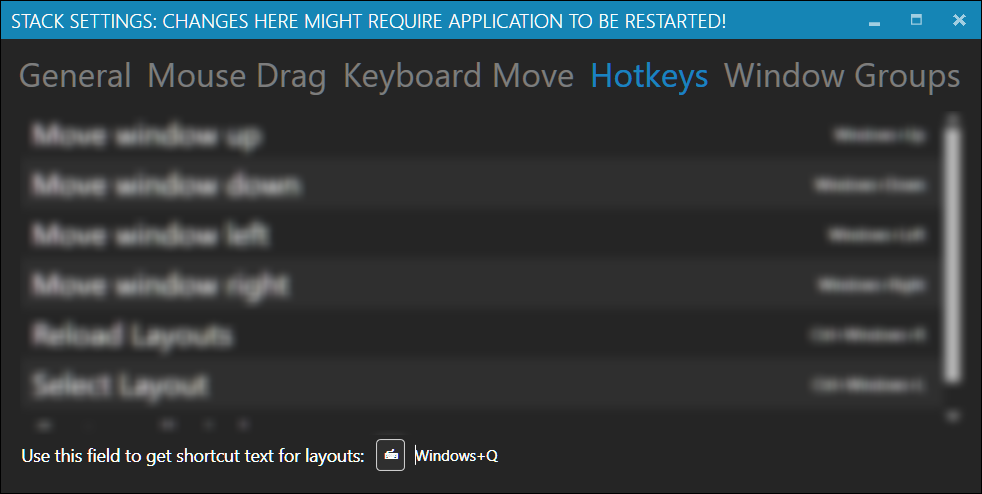

The Widgets Update (v2.1)
Please, use our contact form if you want to get pre-release updates.Contents:
- Widgets
- Autolayout (preview)
- Zone hotkeys and 'Which mouse button to use' setting
- Enterprise Subscription
- Bug Fixes and Minor Improvements
- Breaking Changes
- What was new in V2
Widgets
With v2.1 we are adding an ability to create and share custom widgets, that can be put on Stack layouts. Initial release of Stack v2.1 contains a single sample widget, and a small amount of composable tools, that enable creation of more complicated data-rich widgets inline inside your layouts. An example of custom widget for an RSS feed, defined in Stack layout: Check out or blog post on how to create highly customized widget like this one (+ Feedly). If you have some familiarity with XAML already, check our GitHub repository for docs. Our first out of box widget simply allows you to embed any web page into your layout: In this example I've embedded a little YouTube TV interface with a simple line in the layout:<widgets:WebView Height="200" URL="https://www.youtube.com/tv"/>To use standard widgets you need to add a
widgets reference to the beginning like this:
xmlns:... xmlns:widgets="clr-namespace:LostTech.Stack.Widgets;assembly=LostTech.Stack.Widgets" xmlns:...Failing to do so will likely cause Stack to crash when attempting to load this layout. We decided to go with the WebView first, as embedding web pages opens the most possibilities. You can find a lot of embeddable widgets on the Internet: news/Twitter feeds, weather, stocks/currencies, maps, and many others. Out of box Stack widgets are open sourced under Apache 2.0 license. If you want your awesome custom widget to be shipped with the next version of Stack, submit a pull request to this repository.
Note: we will only accept general use widgets, or widgets for broadly used services, such as YouTube, Facebook, etc. You will still be able to distribute your widget separately.
Autolayout (preview)
Stack can now automatically assign most newly opened windows to their closest zone. This is called capturing. See an example of Visual Studio Code taking its place in the layout: This feature is off by default. You can enable its various aspects on the General settings page.'Which mouse button to use' setting
You can now change which mouse button is used to drag windows between zones.
Zone hotkeys
We've added an ability to assign hotkey combinations to move active window to the zone.For example:
<zones:Zone x:Name="Main" behavior:Hotkey.MoveTo="Windows+Oem5" />You need to reference
behavior in the beginning of the layout like this:
xmlns:... xmlns:behavior="clr-namespace:LostTech.Stack.Behavior;assembly=Stack" xmlns:...Failing to do so will likely cause Stack to crash when attempting to load this layout. For some keys it might be unclear what to put into
Hotkey.MoveTo=,
so we've added a tool into Hotkeys section of Stack Settings,
that lets you press a key combination, and get its textual description:

Bug Fixes and Minor Improvements
- full support for Windows Insider builds
- 'Close window' buttons in tabs
- improved startup time
- simplified tray menu
- better tracking for when windows are closed
- peform several operations in background